Weighted Survival Analysis Examples
Source:vignettes/weightedsurv_examples.Rmd
weightedsurv_examples.RmdOverview
In this vignette of the weightedsurv package (Leon 2024) we illustrate various weighted
survival analyses with two breast cancer datasets available in the base
R survival library (Therneau
2023), both comparing hormonal therapy with no hormonal therapy.
The gbsg trial (Schumacher et al.
1994) was randomized, whereas the rotterdam study
(Royston and Altman 2013) was
observational; for the non-randomized comparison the hazard ratio is
estimated with and without propensity-score weighting (Cole and Hernán 2004) in a restricted Rotterdam
population, and shown next to the hazard ratio of the GBSG trial data,
each with its confidence interval. The three values are given in the
section “Restricted population: postmenopausal women without
chemotherapy”.
Survival Analysis and KM Plotting
Survival analysis functions allowing for time-dependent and subject-specific (eg, propensity-scores) weighting.
Weighted estimation for: Cox model; Kaplan-Meier treatment survival curves as well as treatment difference along with point-wise and simultaneous confidence bands; and Restricted mean survival time (RMST, Uno et al. (2014)) comparisons where RMST estimates are evaluated across all potential truncation times (point-wise and simultaneous bands).
Summary: Weighted Survival Analysis Capabilities
- Weighted Kaplan-Meier and Log-Rank Analyses
- The code provides functions to compute and plot weighted
Kaplan-Meier survival curves for two groups (treatment coded 0/1), using
subject-specific weights. Weighted log-rank statistics can be calculated
using flexible, time-dependent weighting schemes (e.g.,
Fleming-Harrington, Schemper, Xu & O’Quigley, Magirr-Burman, and
custom schemes).
KM_estimates()computes survival probabilities from weighted risk sets and event counts,KM_diff()the difference of two curves, andwlr_cumulative()andwlr_dhat_estimates()weighted log-rank statistics (all inR/km_wlr_calculations_helpers.R).
- The code provides functions to compute and plot weighted
Kaplan-Meier survival curves for two groups (treatment coded 0/1), using
subject-specific weights. Weighted log-rank statistics can be calculated
using flexible, time-dependent weighting schemes (e.g.,
Fleming-Harrington, Schemper, Xu & O’Quigley, Magirr-Burman, and
custom schemes).
- Weighted Cox Proportional Hazards Models
- The code supports fitting Cox models with time-dependent weights,
including rho-gamma weights for weighted log-rank tests, with or without
subject-specific weights.
cox_rhogamma()andcox_score_rhogamma()(inR/weightedCox.R) implement weighted Cox regression, including score calculations, confidence intervals, and resampling for inference (cox_rhogamma_resample()). The estimate is the root of the weighted score equation (find_cox_root()).
- The code supports fitting Cox models with time-dependent weights,
including rho-gamma weights for weighted log-rank tests, with or without
subject-specific weights.
- Flexible Weighting Schemes
-
R/weighted_helpers.Rprovides a framework for defining, validating, and applying a variety of time-dependent weighting schemes (wt.rg.S(),validate_scheme_params(),get_validated_weights()).get_weights()andextract_and_calc_weights()compute the weights of one or several schemes at each time point, supporting both standard and custom schemes. Visualization of weight functions over time is supported viaplot_weight_schemes().
-
- Counting Process Data Preparation
- The code can transform raw survival data into a counting process
format, which is essential for weighted analyses.
df_counting()(inR/df_counting.R) and the helpers inR/df_counting_helpers.R(get_dfcounting(),extract_group_data(),calculate_risk_event_counts()) prepare risk sets, event counts, and weighted summaries for each group, supporting both unweighted and weighted analyses.
- The code can transform raw survival data into a counting process
format, which is essential for weighted analyses.
- Propensity-Score Weights
-
ps_weights()(inR/ps_weights.R) fits a logistic model for the treatment and returns inverse-probability or stabilized weights, together with what is needed to carry the estimation of the weights into standard errors, intervals, bands and tests (weight_variance = "estimated").
-
- Weighted RMST (Restricted Mean Survival Time)
-
cumulative_rmst_bands()(inR/rmst_calculations.R) calculates cumulative RMST and confidence bands using resampling, with support for weights.
-
- Plotting and Visualization
- Weighted survival curves, confidence intervals, and risk tables can
be plotted with
plot_weighted_km(), and survival differences with bands withplotKM.band_subgroups()(functions inR/kmplotting_helpers.RandR/df_counting_helpers.R). The plotting functions support the display of weighted KM curves, weighted risk tables, and annotation of statistical results.
- Weighted survival curves, confidence intervals, and risk tables can
be plotted with
Analysis functions
df_counting
Prepares a comprehensive dataset for survival analysis using the counting process approach. Computes risk sets, event counts, Kaplan-Meier estimates, log-rank (Fleming-Harrington () weights) and Cox model results, and quantile estimates for two groups (e.g., treatment and control), optionally handling (subject-specific case) weights (such as inverse probability weights) and stratification.
Time-dependent weights for log-rank statistics are implemented via wt.rg.S function: Supporting a variety of commonly used and custom weighting schemes for weighted log-rank and related tests. The function is flexible and can be used for Fleming-Harrington, Schemper, Xu & O’Quigley (XO), Magirr-Burman (MB), custom time-based, and exponential variants of Fleming-Harrington weights.
Subject-specific (case-weights) are also included in order to implement propensity-score weighted analyses.
Key Features: - Calculates weights for use in weighted
log-rank and related survival tests. - Supports standard
Fleming-Harrington weights (scheme = "fh"). - Implements
Schemper weights (scheme = "schemper"), XO weights
(scheme = "XO"), MB weights (scheme = "MB"). -
Allows for custom time-based weights
(scheme = "custom_time"). - Supports exponential variants
of Fleming-Harrington weights (scheme = "fh_exp1",
scheme = "fh_exp2").
plot_weighted_km
Creates Kaplan-Meier survival plots for two groups (e.g., treatment vs. control), allowing for the use of weights (such as inverse probability weights) in the estimation. The function can display survival curves, confidence intervals, risk tables, and optionally subgroup curves or additional annotations.
KM_diff
KM_diff compares Kaplan-Meier survival curves between two groups (typically treatment vs. control) using time-to-event data. It calculates survival estimates, their differences, and provides both pointwise and simultaneous confidence intervals. The function can also perform resampling to construct simultaneous confidence bands.
Allows for arbitrary weights (non-negative) to implement (for example) propensity-score adjustment (IPW).
plotKM.band_subgroups
Plots the difference (via KM_diff calculations) in Kaplan-Meier survival curves between two groups (e.g., treatment vs. control), optionally including simultaneous confidence bands and subgroup curves. The function also displays risk tables for the overall population and specified subgroups.
wlr_dhat_estimates
Computes the weighted log-rank test statistic, its variance, the
difference in survival between two groups at a specified time point
(tzero), the variance of this difference, their covariance,
and correlation. It supports flexible time-dependent weighting schemes
via the wt.rg.S function.
cumulative_rmst_bands
The cumulative_rmst_bands function calculates and plots cumulative Restricted Mean Survival Time (RMST) estimates and their confidence bands for survival curves, typically comparing two groups (e.g., treatment vs. control).
Key Features
Computes cumulative RMST over time for each group.
Uses multiplier (martingale) resampling to estimate confidence bands for the RMST curves.
Supports weighted analyses (optional).
Plots the RMST curves and their confidence intervals along with simultaneous bands.
oldpar <- par(no.readonly = TRUE)
library(survival)
# To install weightedsurv: the released version from CRAN
# install.packages("weightedsurv")
# or the development version from GitHub
# devtools::install_github("larry-leon/weightedsurv")
library(weightedsurv)
if (has[["dplyr"]]) library(dplyr)
# formatting of the numbers quoted in the text
fmt <- function(x, digits = 2) formatC(x, format = "f", digits = digits)GBSG data analysis example
—- Data Preparation —- Prepare GBSG data
library(survival)
df_gbsg <- gbsg
df_gbsg$tte <- df_gbsg$rfstime / 30.4375
df_gbsg$event <- df_gbsg$status
df_gbsg$treat <- df_gbsg$hormon
df_gbsg$grade3 <- ifelse(df_gbsg$grade == "3", 1, 0)
# Note that these are default names
# For alternative names, for example if the
# time-to-event outcome (tte) is time_months
# then tte.name <- "time_months"
tte.name <- "tte"
event.name <- "event"
treat.name <- "treat"
arms <- c("treat", "control")—- Main Analyses —-
GBSG - ITT Analysis
# Returns standard log-rank (FH(0,0) via scheme="fh" rho,gamma = 0 in scheme_params)
dfcount_gbsg <- df_counting(df=df_gbsg, tte.name = tte.name, event.name = event.name, treat.name = treat.name, arms = arms,
by.risk = 12, scheme = "fh", scheme_params = list(rho = 0, gamma =0), lr.digits = 4, cox.digits =3)
# test default names
#test <- df_counting(df=df_gbsg, by.risk = 12, scheme = "fh", scheme_params = list(rho = 0, gamma =0), lr.digits = 4, cox.digits =3)
# MB weighting
#test <- df_counting(df=df_gbsg, tte.name=tte.name, event.name=event.name, treat.name=treat.name, arms=arms, scheme = "MB", scheme_params = list(mb_tstar = 12))
# 0/1 weighting (0 for time <= t.tau, 1 for time > t.tau)
#test <- df_counting(df=df_gbsg, tte.name=tte.name, event.name=event.name, treat.name=treat.name, arms=arms, scheme = "custom_time", scheme_params = list(t.tau = 6, w0.tau = 0, w1.tau =1))Show some weight functions
g <- plot_weight_schemes(dfcount_gbsg)
print(g)
—- Plotting —- ## GBSG KM plots
par(mfrow=c(1,2))
# Mine
# Set ymax a little above 1.0 to allow for logrank placement in topleft
# topleft is default; xmed.fraction = 0.65 positions the display of the median estimates below the HR estimates ("topright" legend [default])
# For details, please see summary of xmed.fraction in the Appendix below.
plot_weighted_km(dfcount=dfcount_gbsg, conf.int=FALSE, show.logrank = TRUE,
put.legend.lr = "topleft", ymax = 1.05, xmed.fraction = 0.65)
title(main="GBSG (trial) data un-weighted")
# Compare with survfit
plot_km(df=df_gbsg, tte.name=tte.name, event.name=event.name, treat.name=treat.name)
title(main="GBSG (trial) data un-weighted
via survfit")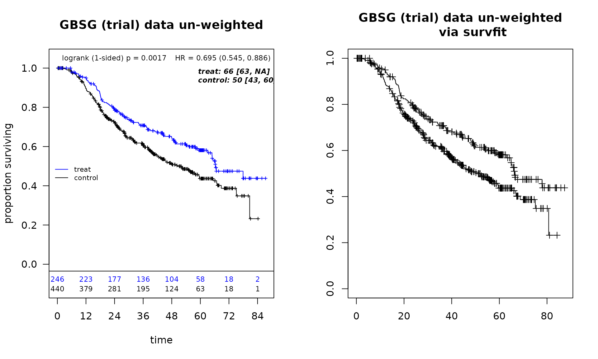
Include 95% CIs
plot_weighted_km(dfcount=dfcount_gbsg, conf.int=TRUE, show.logrank = TRUE, ymax = 1.05)
title(main="GBSG (trial) data un-weighted")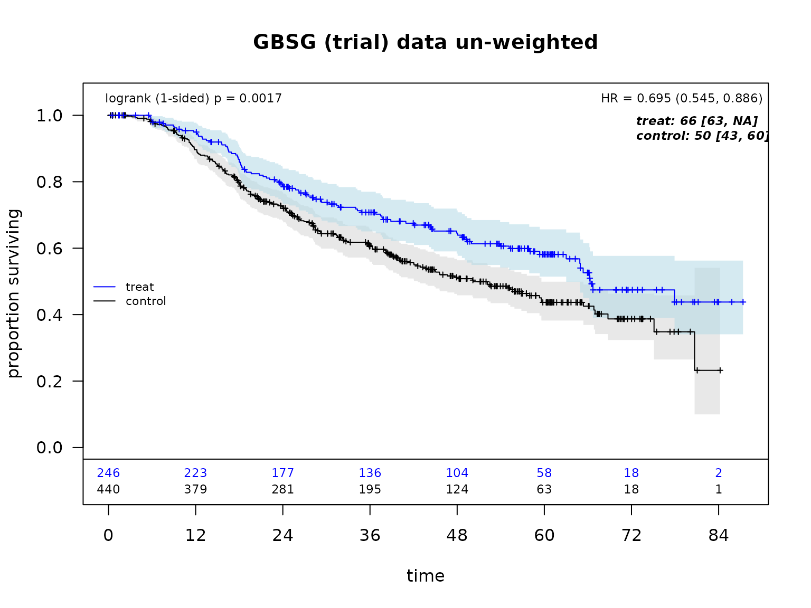
Rotterdam observational data analysis with weighting
—- Propensity Score Weighting (Rotterdam) —-
Prepare Rotterdam data
gbsg_validate <- within(rotterdam, {
rfstime <- ifelse(recur == 1, rtime, dtime)
t_months <- rfstime / 30.4375
time_months <- t_months
status <- pmax(recur, death)
ignore <- (recur == 0 & death == 1 & rtime < dtime)
status2 <- ifelse(recur == 1 | ignore, recur, death)
rfstime2 <- ifelse(recur == 1 | ignore, rtime, dtime)
time_months2 <- rfstime2 / 30.4375
grade3 <- ifelse(grade == "3", 1, 0)
treat <- hormon
event <- status2
tte <- time_months
id <- as.numeric(1:nrow(rotterdam))
SG0 <- ifelse(er <= 0, 0, 1)
})Node positive only to correspond to GBSG population. The
node-positive data are kept as df_rotterdam_np; the
cross-trial comparison further below uses them.
df_rotterdam_np <- subset(gbsg_validate, nodes > 0)Time and event definition. Every Rotterdam analysis in this vignette
uses the time tte, which is rfstime in months
(the time of recurrence when there was one, otherwise the time of death
or last follow-up), and the event indicator event, which is
status2: a recurrence, or a death without recurrence,
except that a death recorded after the end of the recurrence follow-up
(rtime < dtime) is not counted as an event. Among the
node-positive women status2 differs from
status = pmax(recur, death) in 21 of 1546 rows.
Baseline demographics table (all node-positive women). This table needs the dplyr package.
library(dplyr)
rotterdam2 <- df_rotterdam_np %>%
mutate(
meno = factor(meno, levels = c(0, 1), labels = c("Pre", "Post")),
grade3 = factor(grade3, levels = c(0, 1), labels = c("Not Grade 3", "Grade 3")),
chemo = factor(chemo, levels = c(0, 1), labels = c("No", "Yes")),
er_negative = factor(ifelse(er == 0, 1, 0), labels = c("ER negative","ER positive"))
)
baseline_table <- create_baseline_table(
data = rotterdam2,
treat_var = "treat",
vars_continuous = c("age", "pgr", "er", "nodes"),
vars_categorical = c("size","meno","chemo","er_negative"),
show_pvalue = TRUE,
show_smd = TRUE
)
baseline_table| Baseline Characteristics by Treatment Arm | |||||
| Characteristic | Control (n=1207) | Treatment (n=339) | P-value1 | SMD2 | |
|---|---|---|---|---|---|
| age | Mean (SD) | 54.1 (13.2) | 62.5 (9.9) | <0.001 | 0.67 |
| pgr | Mean (SD) | 169.7 (320.6) | 108.2 (200.3) | <0.001 | 0.21 |
| er | Mean (SD) | 160.7 (266.0) | 180.6 (271.7) | 0.232 | 0.07 |
| nodes | Mean (SD) | 5.1 (5.0) | 5.7 (4.6) | 0.030 | 0.13 |
| size | 0.581 | 0.03 | |||
| <=20 | 397 (32.9%) | 104 (30.7%) | |||
| 20-50 | 611 (50.6%) | 172 (50.7%) | |||
| >50 | 199 (16.5%) | 63 (18.6%) | |||
| meno | <0.001 | 0.31 | |||
| Pre | 587 (48.6%) | 41 (12.1%) | |||
| Post | 620 (51.4%) | 298 (87.9%) | |||
| chemo | <0.001 | 0.32 | |||
| No | 655 (54.3%) | 311 (91.7%) | |||
| Yes | 552 (45.7%) | 28 (8.3%) | |||
| er_negative | 1.000 | 0.00 | |||
| ER negative | 1058 (87.7%) | 297 (87.6%) | |||
| ER positive | 149 (12.3%) | 42 (12.4%) | |||
| 1 P-values: t-test for continuous, chi-square/Fisher's exact for categorical/binary variables | |||||
| 2 SMD = Standardized mean difference | |||||
Effective sample size with all node-positive women
Propensity score model for all node-positive women.
ps_weights() fits the logistic model and returns the
weights (here stabilized weights; the default is
type = "ipw").
pw_np <- ps_weights(treat ~ age + meno + size + grade3 + nodes + pgr + chemo + er,
data = df_rotterdam_np, type = "stabilized")
df_rotterdam_np$sw.weights <- pw_np$weights
dfcount_np_wtd <- get_dfcounting(df=df_rotterdam_np, tte.name=tte.name, event.name=event.name, treat.name=treat.name, arms=arms, by.risk=24,
weight.name="sw.weights")
knitr::kable(dfcount_np_wtd$ess, digits = c(0, 0, 1, 3))| group | n | ess | ratio |
|---|---|---|---|
| treat | 339 | 105.2 | 0.310 |
| control | 1207 | 1162.9 | 0.964 |
df_counting()$ess gives, by arm, the number of subjects
n, the effective sample size ess
and their ratio: a ratio near 1 means that the weights are spread evenly
over the arm, a low ratio that a few subjects carry most of the weight.
Here the ratio of the treated arm is 0.31 (the 339 treated women count
for about 105) and the largest weight is 12.9. In these data hormonal
therapy went mostly to postmenopausal women who had no chemotherapy (291
of the 339 treated women), so the few treated women who were
premenopausal or had chemotherapy receive large weights. For this reason
the weighted example is restricted to postmenopausal women without
chemotherapy.
Restricted population: postmenopausal women without chemotherapy
Propensity score model on the rows analysed (meno and
chemo are constant in this population and leave the model).
The object returned by ps_weights() is kept: it is passed
below as weight_model, so that standard errors, intervals,
bands and tests account for the estimation of the weights
(weight_variance = "estimated").
df_rotterdam <- subset(df_rotterdam_np, meno == 1 & chemo == 0)
pw <- ps_weights(treat ~ age + size + grade3 + nodes + pgr + er,
data = df_rotterdam, type = "stabilized")
pw## Propensity-score weights (stabilized): n = 829, 8 coefficients in the logistic model
## arm n weight min weight max ess ess / n
## treat = 1 291 0.6809 2.709 270.7 0.9301
## treat = 0 538 0.6621 1.329 529.3 0.9837
df_rotterdam$sw.weights <- pw$weightsThe restricted population has 829 women: 538 without and 291 with hormonal therapy.
Standardized differences (treated minus control, in units of the pooled unweighted standard deviation) of the model’s covariates, before and after weighting:
std_diff <- function(x, a, w) {
(weighted.mean(x[a == 1], w[a == 1]) - weighted.mean(x[a == 0], w[a == 0])) /
sqrt((var(x[a == 1]) + var(x[a == 0])) / 2)
}
X_ps <- model.matrix(~ age + size + grade3 + nodes + pgr + er, data = df_rotterdam)[, -1]
balance <- data.frame(
covariate = colnames(X_ps),
unweighted = apply(X_ps, 2, std_diff, a = df_rotterdam$treat, w = rep(1, nrow(df_rotterdam))),
weighted = apply(X_ps, 2, std_diff, a = df_rotterdam$treat, w = df_rotterdam$sw.weights),
row.names = NULL
)
knitr::kable(balance, digits = 3)| covariate | unweighted | weighted |
|---|---|---|
| age | -0.131 | -0.001 |
| size20-50 | -0.117 | -0.009 |
| size>50 | 0.032 | -0.004 |
| grade3 | 0.250 | 0.003 |
| nodes | 0.067 | 0.001 |
| pgr | -0.259 | -0.053 |
| er | -0.137 | 0.007 |
The largest absolute standardized difference is 0.26 before weighting and 0.05 after.
Un-weighted and weighted analyses
dfcount_rotterdam_unwtd <- get_dfcounting(df=df_rotterdam, tte.name=tte.name, event.name=event.name, treat.name=treat.name, arms=arms, by.risk=24)
dfcount_rotterdam_wtd <- get_dfcounting(df=df_rotterdam, tte.name=tte.name, event.name=event.name, treat.name=treat.name, arms=arms, by.risk=24,
weight.name="sw.weights", weight_variance = "estimated", weight_model = pw)
knitr::kable(dfcount_rotterdam_wtd$ess, digits = c(0, 0, 1, 3))| group | n | ess | ratio |
|---|---|---|---|
| treat | 291 | 270.7 | 0.930 |
| control | 538 | 529.3 | 0.984 |
Both ratios are close to 1 (0.93 treated, 0.98 control) and the largest weight is 2.7: the weights are spread evenly within each arm.
The weighted hazard ratio is 0.66 (0.56, 0.78), the unweighted one 0.72 (0.60, 0.86). For context, in the GBSG trial data analysed above it is 0.69 (0.54, 0.89).
—- Plotting Weighted vs Unweighted —-
par(mfrow=c(1,2))
plot_weighted_km(dfcount=dfcount_rotterdam_unwtd, xmed.fraction = 0.65)
title(main="Rotterdam un-weighted K-M curves")
plot_weighted_km(dfcount=dfcount_rotterdam_wtd, xmed.fraction = 0.65)
title(main="Rotterdam weighted K-M curves")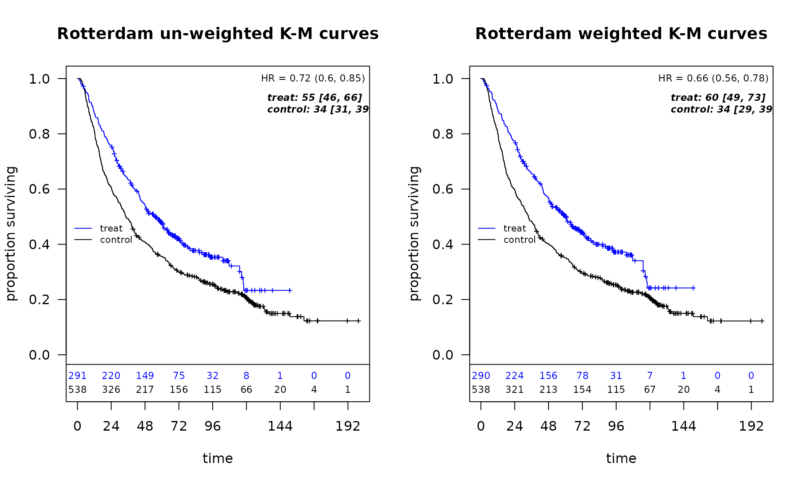
## Compare with GBSG trial data
par(mfrow=c(1,2))
plot_weighted_km(dfcount=dfcount_gbsg, conf.int = TRUE, xmed.fraction = 0.65, show.logrank = TRUE, ymax = 1.05)
title(main="GBSG (trial) data un-weighted K-M curves")
plot_weighted_km(dfcount=dfcount_rotterdam_wtd, conf.int = TRUE, xmed.fraction = 0.65, show.logrank = TRUE, ymax = 1.05)
title(main="Rotterdam weighted K-M curves")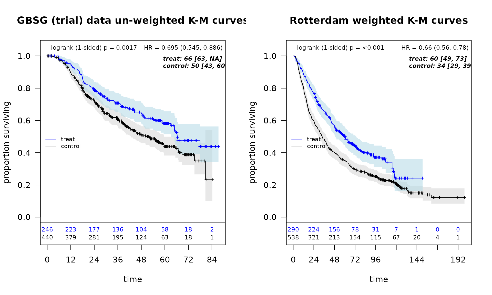
Simultaneous bands and point-wise CIs
The first graph displays the first 20 resampled approximations to the centered survival difference
each divided by the standard error of the difference at
(the curves Zdhat_star of KM_diff()). The
simultaneous band is
,
where
is the
quantile, over the draws.band resampled curves, of the
largest absolute standardized value. The supremum, and so the band, is
over the whole time range of the call: every time point up to the
smaller of the two arms’ last event times (or up to
tau_add, when that is later). No quantile range is trimmed
(qtau acts only with modify_tau = TRUE, which
is not used here).
With weight_variance = "estimated" and
weight_model = pw the pointwise limits and the band account
for the estimation of the weights.
—- Simultaneous CI bands —-
par(mfrow=c(1,2))
temp <- plotKM.band_subgroups(
df=df_rotterdam,
xlabel="Months", ylabel="Survival difference",
yseq_length=5, cex_Yaxis=0.7, risk_cex=0.7,
tau_add=42, by.risk = 12, risk_delta=0.075, risk.pad=0.03, ymax.pad = 0.125,
tte.name = tte.name, treat.name = treat.name, event.name = event.name, weight.name = "sw.weights",
draws.band = 1000, show_resamples = TRUE,
weight_variance = "estimated", weight_model = pw
)
legend("topleft", c("Difference estimate", "95% pointwise CIs"),
lwd=c(2,1), col=c("black"), lty=c(1,2), bty="n", cex=0.7)
title(main="Rotterdam data
propensity score weighted")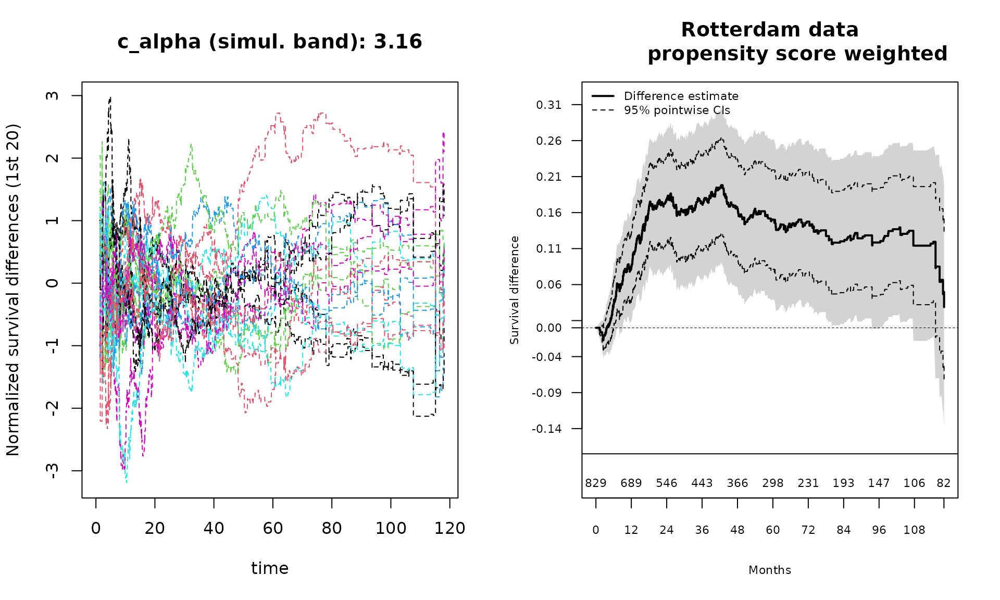
Compare Rotterdam observational data with propensity-score weighting and GBSG randomized data
—- Simultaneous CI bands —-
par(mfrow=c(2,2))
temp <- plotKM.band_subgroups(
df=df_rotterdam,
xlabel="Months", ylabel="Survival difference",
yseq_length=5, cex_Yaxis=0.7, risk_cex=0.7,
tau_add=42, by.risk = 12, risk_delta=0.075, risk.pad=0.03, ymax.pad = 0.125,
tte.name = tte.name, treat.name = treat.name, event.name = event.name, weight.name = "sw.weights",
draws.band = 1000, show_resamples = FALSE,
weight_variance = "estimated", weight_model = pw
)
legend("topleft", c("Difference estimate", "95% pointwise CIs"),
lwd=c(2,1), col=c("black"), lty=c(1,2), bty="n", cex=0.7)
title(main="Rotterdam data
propensity score weighted")
get_bands <- cumulative_rmst_bands(df = df_rotterdam, fit = temp$fit_itt,
tte.name = tte.name, event.name = event.name, treat.name = treat.name , weight.name = "sw.weights",
draws_sb = 1000, xlab="months", rmst_max_cex = 0.7,
weight_variance = "estimated", weight_model = pw)
legend("topleft", c("Cumulative RMST estimate", "95% pointwise CIs"),
lwd=c(2,1), col=c("black"), lty=c(1,2), bty="n", cex=0.7)
# kept for the comparison of the two weight_variance options below
band_rotterdam <- temp
rmst_rotterdam <- get_bands
temp <- plotKM.band_subgroups(
df=df_gbsg,
Maxtau = NULL,
xlabel="Months", ylabel="Survival difference",
yseq_length=5, cex_Yaxis=0.7, risk_cex=0.7,
by.risk = 6, risk_delta=0.075, risk.pad=0.03,
tte.name = tte.name, treat.name = treat.name, event.name = event.name,
draws.band = 1000, show_resamples = FALSE
)
legend("topleft", c("Difference estimate", "95% pointwise CIs"),
lwd=c(2,1), col=c("black"), lty=c(1,2), bty="n", cex=0.75)
title(main="GBSG data")
get_bands <- cumulative_rmst_bands(df = df_gbsg, fit = temp$fit_itt,
tte.name = tte.name, event.name = event.name, treat.name = treat.name,
draws_sb = 1000, xlab="months", rmst_max_cex = 0.75)
legend("topleft", c("Cumulative RMST estimate", "95% pointwise CIs"),
lwd=c(2,1), col=c("black"), lty=c(1,2), bty="n", cex=0.75)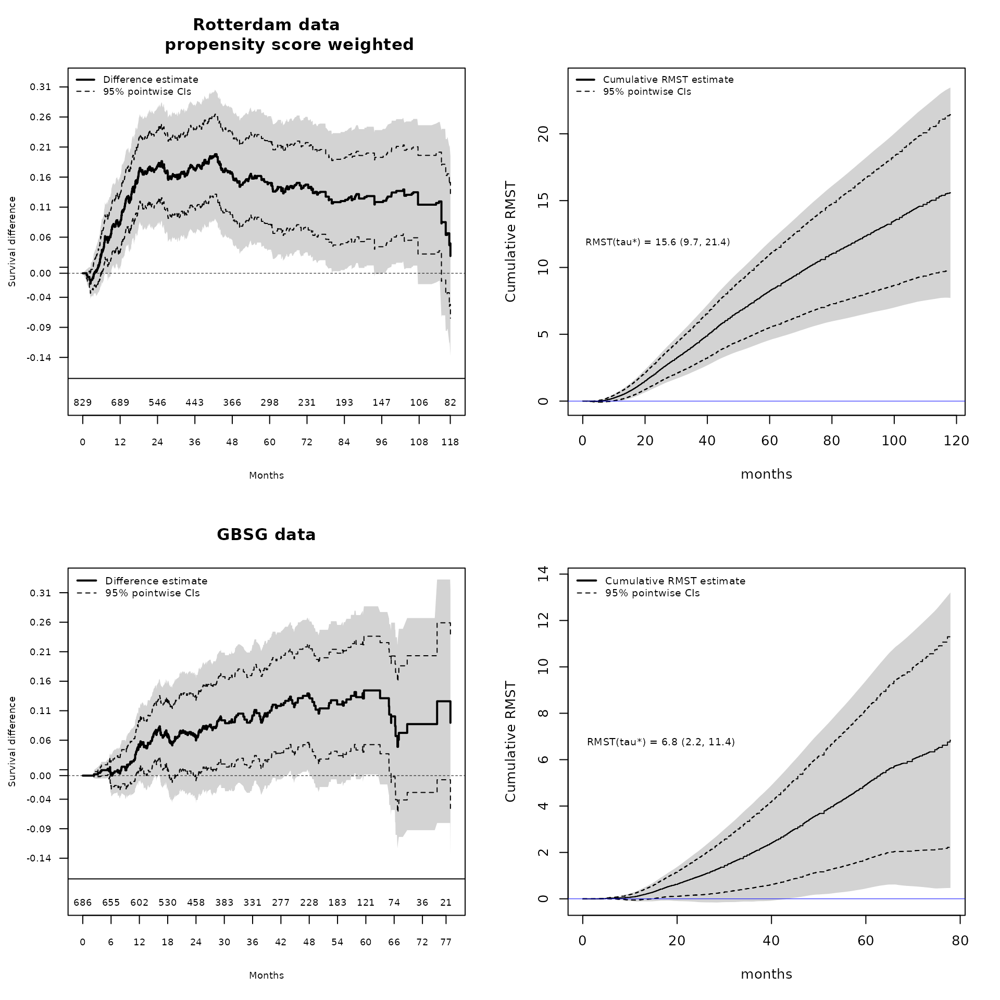
Weights treated as known or as estimated
The Rotterdam analyses above use
weight_variance = "estimated": the weights come from a
logistic propensity model fitted on the rows analysed, and its
estimation is carried into the log-rank test, the hazard-ratio interval,
the survival difference and the RMST. The default,
weight_variance = "known", treats the weights as fixed
numbers. No estimate differs between the two options; standard errors,
intervals, bands and tests do. The same analyses under both options
(FH(0,0) weights; RMST difference at the last time point of the band
plot):
dfcount_rotterdam_known <- get_dfcounting(df=df_rotterdam, tte.name=tte.name, event.name=event.name, treat.name=treat.name, arms=arms, by.risk=24,
weight.name="sw.weights")
# survival difference and RMST with the weights treated as known, on the time grid of the band plot
fit_known <- KM_diff(df = df_rotterdam, tte.name = tte.name, event.name = event.name, treat.name = treat.name,
weight.name = "sw.weights", at_points = band_rotterdam$fit_itt$at_points, draws.band = 1000)
rmst_known <- cumulative_rmst_bands(df = df_rotterdam, fit = fit_known,
tte.name = tte.name, event.name = event.name, treat.name = treat.name,
weight.name = "sw.weights", draws_sb = 1000, plot = FALSE)
option_row <- function(dfcount, rmst) {
cox <- cox_rhogamma(dfcount = dfcount, scheme = "fh", scheme_params = list(rho = 0, gamma = 0))
ci <- cox$hr_ci_asy
r <- rmst$rmst_maxtau_ci
data.frame(
weights = cox$weight_variance,
z = fmt(dfcount$z.score, 2),
HR = paste0(fmt(ci$hr, 2), " (", fmt(ci$lower, 2), ", ", fmt(ci$upper, 2), ")"),
RMST = paste0(fmt(r[1], 1), " (", fmt(r[2], 1), ", ", fmt(r[3], 1), ")")
)
}
known_vs_estimated <- rbind(option_row(dfcount_rotterdam_known, rmst_known),
option_row(dfcount_rotterdam_wtd, rmst_rotterdam))
knitr::kable(known_vs_estimated, align = "lrrr",
col.names = c("Weights treated as", "Log-rank z", "Hazard ratio (95% CI)",
paste0("RMST difference at ", fmt(max(rmst_rotterdam$at_points), 1), " months (95% CI)")))| Weights treated as | Log-rank z | Hazard ratio (95% CI) | RMST difference at 118.0 months (95% CI) |
|---|---|---|---|
| known | 4.45 | 0.66 (0.56, 0.80) | 15.6 (9.2, 22.0) |
| estimated | 4.87 | 0.66 (0.56, 0.78) | 15.6 (9.7, 21.4) |
Reading: the hazard ratio and the RMST difference are the same in the two rows. With the weights treated as estimated the log-rank z is larger and both intervals are shorter than with the weights treated as known.
Neither option is the better one in general. In the evaluation of
this version of the package (section “Simulation results by time” of the
article estimated_weights_methodology), with evenly spread
weights "estimated" was close to nominal and
"known" was conservative; with concentrated weights both
fell short of nominal, at the earliest or the latest months depending on
the design (Table 1 and Figure 1 of that section), and the shortfall
came from the weights. The effective sample size table shows how the
weights are spread. "known" is kept below for the FH(0,1)
and the other time-weighted Cox analyses and for the cross-trial
example. The derivation and the statistical properties of this option
are in the article estimated_weights_methodology
(“Estimated propensity-score weights: statistical details and
properties”).
Compare GBSG experimental to Rotterdam control
This cross-trial comparison (GBSG treated against Rotterdam
node-positive control) is kept as a hard case for weighting: see the
effective sample size table and the caveats below. The controls are all
node-positive Rotterdam women without hormonal therapy
(df_rotterdam_np, not the restricted population above), and
the weights are treated as known
(weight_variance = "known", the default). The code of this
section uses the dplyr package: its tables, figures and numbers need
that package.
Propensity score model
df_gbsg_treat <- subset(df_gbsg, treat == 1)
df_rotterdam_control <- subset(df_rotterdam_np, treat == 0)
df_gbsg_treat <- df_gbsg_treat %>%
mutate(
size = ifelse(size <= 20, "<=20", ifelse(size > 20 & size <=50, "20-50", ">50")),
)
# note: GBSG does not have "chemo" variable
df_gbsg_treat <- df_gbsg_treat[,c("tte","event","treat","age","meno","size","grade3","nodes","pgr","er")]
df_rotterdam_control <- df_rotterdam_control[,c("tte","event","treat","age","meno","size","grade3","nodes","pgr","er")]
# cross-trial-comparison (CTC)
df_CTC <- rbind(df_gbsg_treat, df_rotterdam_control)
fit.ps <- glm(treat ~ age + meno + size + grade3 + nodes + pgr + er, data = df_CTC, family="binomial")
pihat <- fit.ps$fitted
pihat.null <- glm(treat ~ 1, family="binomial", data = df_CTC)$fitted
wt.1 <- pihat.null / pihat
wt.0 <- (1 - pihat.null) / (1 - pihat)
df_CTC$sw.weights <- ifelse(df_CTC$treat == 1, wt.1, wt.0)Baseline demographics table
df_CTC$er_negative <- ifelse(df_CTC$er == 0, 1, 0)
baseline_table <- create_baseline_table(
data = df_CTC,
treat_var = "treat",
vars_continuous = c("age", "pgr", "er", "nodes"),
vars_categorical = c("size","meno","er_negative"),
show_pvalue = TRUE,
show_smd = TRUE
)
baseline_table| Baseline Characteristics by Treatment Arm | |||||
| Characteristic | Control (n=1207) | Treatment (n=246) | P-value1 | SMD2 | |
|---|---|---|---|---|---|
| age | Mean (SD) | 54.1 (13.2) | 56.6 (9.4) | <0.001 | 0.20 |
| pgr | Mean (SD) | 169.7 (320.6) | 124.3 (249.7) | 0.014 | 0.15 |
| er | Mean (SD) | 160.7 (266.0) | 125.8 (191.1) | 0.016 | 0.14 |
| nodes | Mean (SD) | 5.1 (5.0) | 5.1 (5.3) | 0.923 | 0.01 |
| size | <0.001 | 0.14 | |||
| <=20 | 397 (32.9%) | 67 (27.2%) | |||
| >50 | 199 (16.5%) | 14 (5.7%) | |||
| 20-50 | 611 (50.6%) | 165 (67.1%) | |||
| meno | <0.001 | 0.18 | |||
| 0 | 587 (48.6%) | 59 (24.0%) | |||
| 1 | 620 (51.4%) | 187 (76.0%) | |||
| er_negative | 0.501 | 0.02 | |||
| 0 | 1058 (87.7%) | 220 (89.4%) | |||
| 1 | 149 (12.3%) | 26 (10.6%) | |||
| 1 P-values: t-test for continuous, chi-square/Fisher's exact for categorical/binary variables | |||||
| 2 SMD = Standardized mean difference | |||||
dfcount_CTC_unwtd <- get_dfcounting(df = df_CTC, tte.name=tte.name, event.name=event.name, treat.name=treat.name, arms=arms, by.risk=24)
dfcount_CTC_wtd <- get_dfcounting(df=df_CTC, tte.name=tte.name, event.name=event.name, treat.name=treat.name, arms=arms, by.risk=24,
weight.name="sw.weights", weight_variance = "known")
knitr::kable(dfcount_CTC_wtd$ess, digits = c(0, 0, 1, 3))| group | n | ess | ratio |
|---|---|---|---|
| treat | 246 | 73.0 | 0.297 |
| control | 1207 | 1098.8 | 0.910 |
The effective sample size of the treated arm is 73 of 246 (ratio 0.30), and the largest weight is 13.0: a few GBSG patients carry most of the weight of the treated arm.
Caveats. Weighting does not make these two studies comparable.
- Grade 3 tumours are 20% of the GBSG treated arm and 74% of the
Rotterdam control arm, and grade is recorded differently in the two
studies (values 1/2/3 in
gbsg, 2/3 inrotterdam). - 76% of the GBSG treated arm are postmenopausal, against 51% of the Rotterdam control arm.
- The effective sample size ratio of the treated arm is 0.30; with weights this concentrated, standard errors, intervals and tests can be too optimistic.
- Few treated patients are at risk late: 104 at 48 months, 58 at 60 months and 18 at 72 months (of 246).
For these reasons the results below are read up to 60 months.
par(mfrow=c(2,2))
plot_weighted_km(dfcount=dfcount_gbsg, conf.int = TRUE, xmed.fraction = 0.65, show.logrank = TRUE, ymax = 1.2, show.med = FALSE)
title(main="GBSG (trial) data un-weighted K-M curves")
plot_weighted_km(dfcount=dfcount_CTC_wtd, conf.int = TRUE, xmed.fraction = 0.65, show.logrank = TRUE, ymax = 1.2, show.med = FALSE)
title(main="CTC weighted K-M curves")
plot_weighted_km(dfcount=dfcount_CTC_unwtd, conf.int = TRUE, xmed.fraction = 0.65, show.logrank = TRUE, ymax = 1.2, show.med = FALSE)
title(main="CTC un-weighted K-M curves")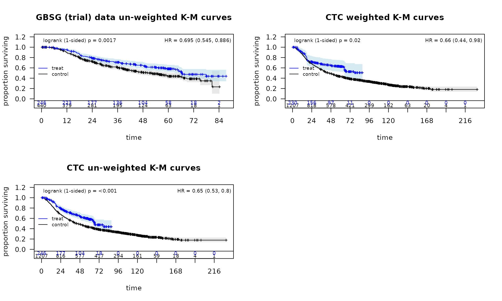
Cumulative weighted log-rank statistics
The log-rank statistic only accumulates at times when both groups have subjects at risk.
The figure below shows the cumulative log-rank z-statistic as a function of time. The curve is drawn from the time at which each arm has had 10 events (9.4 months; before that the statistic rests on very few events). The dashed vertical line is at 60 months, where z = 2.30; the solid horizontal line is at 1.96. The follow-up of the GBSG treated arm ends at 87.4 months; from then on no treated patient is at risk and the curve is constant, at z = 2.11, the value of the test on all the data. Between 60 months and the end of the treated follow-up the curve rests on the few treated patients still at risk (see the caveats above).
par(mfrow=c(1,1))
temp <- wlr_cumulative(dfcount_CTC_wtd, scheme_params = list(rho = 0, gamma = 0), scheme = "fh", return_cumulative = TRUE)
shown <- temp$time >= t_start
# y-axis: the range of the plotted curve and of the reference line
ylim <- range(c(temp$z.score[shown], qnorm(0.975)))
ylim <- ylim + c(-0.05, 0.05) * diff(ylim)
plot(temp$time[shown], temp$z.score[shown], xlab="time", ylab="cumulative log-rank Z", type="s", ylim=ylim)
abline(h = qnorm(0.975), lwd=2, col="red")
abline(v = horizon, lwd=1, col="blue", lty=2)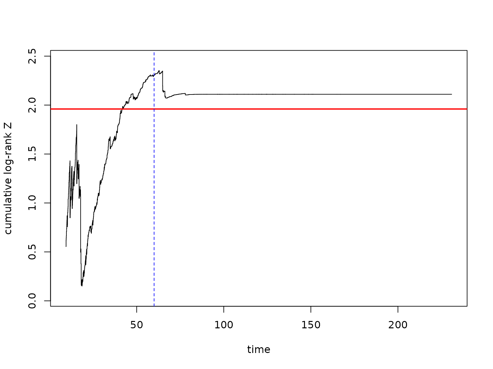
Cumulative weighted log-rank z-statistic (cross-trial comparison), drawn from the 10th event in each arm (9.4 months). Dashed line: 60 months.
Reading the cross-trial comparison at a common horizon
The two arms differ strongly in follow-up: the GBSG treated arm ends at 87.4 months, the Rotterdam control arm at 230.9 months. The survival-difference and cumulative RMST plots below run to the smaller of the two arms’ last event times (77.9 months for the cross-trial data), as called; for the reasons given above we read them at 60 months. The hazard ratio and the log-rank test are also computed with follow-up cut at 60 months (events after 60 months censored at 60).
# follow-up cut at the horizon
df_CTC_cut <- df_CTC
df_CTC_cut$event <- ifelse(df_CTC_cut$tte > horizon, 0, df_CTC_cut$event)
df_CTC_cut$tte <- pmin(df_CTC_cut$tte, horizon)
dfcount_CTC_cut <- get_dfcounting(df=df_CTC_cut, tte.name=tte.name, event.name=event.name, treat.name=treat.name, arms=arms, by.risk=24,
weight.name="sw.weights", weight_variance = "known")
ctc_row <- function(dfcount, followup) {
cox <- cox_rhogamma(dfcount = dfcount, scheme = "fh", scheme_params = list(rho = 0, gamma = 0))
ci <- cox$hr_ci_asy
data.frame(followup = followup, weights = cox$weight_variance, z = fmt(dfcount$z.score, 2),
HR = paste0(fmt(ci$hr, 2), " (", fmt(ci$lower, 2), ", ", fmt(ci$upper, 2), ")"))
}
knitr::kable(rbind(ctc_row(dfcount_CTC_wtd, "all"), ctc_row(dfcount_CTC_cut, paste0("cut at ", horizon, " months"))),
align = "llrr", col.names = c("Follow-up", "Weights treated as", "Log-rank z", "Hazard ratio (95% CI)"))| Follow-up | Weights treated as | Log-rank z | Hazard ratio (95% CI) |
|---|---|---|---|
| all | known | 2.11 | 0.66 (0.44, 0.98) |
| cut at 60 months | known | 2.30 | 0.62 (0.41, 0.95) |
—- Simultaneous CI bands —-
draws <- 1000
par(mfrow=c(2,2))
temp <- plotKM.band_subgroups(
df=df_gbsg,
Maxtau = NULL,
xlabel="Months", ylabel="Survival difference",
yseq_length=5, cex_Yaxis=0.7, risk_cex=0.7,
by.risk = 6, risk_delta=0.075, risk.pad=0.03,
tte.name = tte.name, treat.name = treat.name, event.name = event.name,
draws.band = draws, show_resamples = FALSE
)
legend("topleft", c("Difference estimate", "95% pointwise CIs"),
lwd=c(2,1), col=c("black"), lty=c(1,2), bty="n", cex=0.75)
title(main="GBSG data")
get_bands <- cumulative_rmst_bands(df = df_gbsg, fit = temp$fit_itt,
tte.name = tte.name, event.name = event.name, treat.name = treat.name,
draws_sb = draws, xlab="months", rmst_max_cex = 0.75)
legend("topleft", c("Cumulative RMST estimate", "95% pointwise CIs"),
lwd=c(2,1), col=c("black"), lty=c(1,2), bty="n", cex=0.75)
temp <- plotKM.band_subgroups(
df=df_CTC,
xlabel="Months", ylabel="Survival difference",
yseq_length=5, cex_Yaxis=0.7, risk_cex=0.7,
tau_add=42, by.risk = 12, risk_delta=0.075, risk.pad=0.03, ymax.pad = 0.125,
tte.name = tte.name, treat.name = treat.name, event.name = event.name, weight.name ="sw.weights",
draws.band = draws, show_resamples = FALSE, weight_variance = "known"
)
legend("topleft", c("Difference estimate", "95% pointwise CIs"),
lwd=c(2,1), col=c("black"), lty=c(1,2), bty="n", cex=0.7)
title(main="CTC data")
get_bands <- cumulative_rmst_bands(df = df_CTC, fit = temp$fit_itt,
tte.name = tte.name, event.name = event.name, treat.name = treat.name , weight.name = "sw.weights",
draws_sb = draws, xlab="months", rmst_max_cex = 0.7, weight_variance = "known")
legend("topleft", c("Cumulative RMST estimate", "95% pointwise CIs"),
lwd=c(2,1), col=c("black"), lty=c(1,2), bty="n", cex=0.7)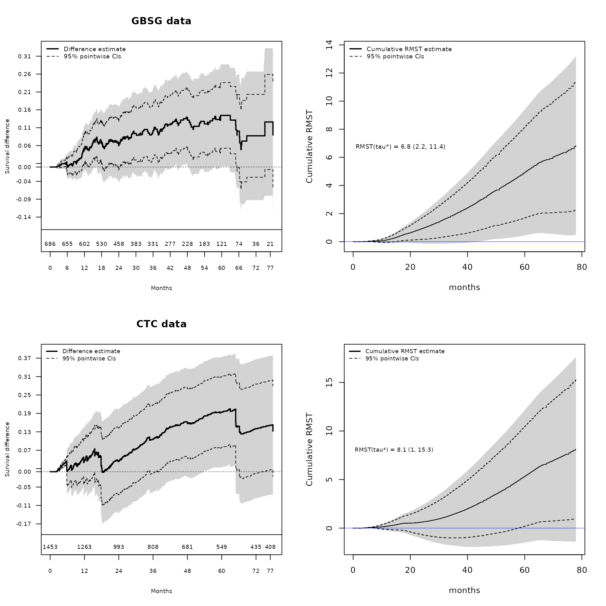
# kept for the reading at the horizon
band_CTC <- temp
rmst_CTC <- get_bandsAt 60 months the weighted cross-trial survival difference is 0.19 (0.08, 0.31) and the cumulative RMST difference is 5.3 (0.2, 10.5) months (estimates with pointwise 95% limits, weights treated as known).
GBSG subgroup differences along with ITT simultaneous band:
Note that er=0 subgroup was identified as questionable benefit.
—- Subgroup Band Plot —-
par(mfrow=c(1,1))
sg_labs <- c("er == 0","er > 0", "meno == 0", "meno ==1")
sg_cols <- c("blue", "brown", "green", "turquoise")
# Randomly sample colors from the built-in palette
# n_sg <- length(sg_labs)
# set.seed(123) # for reproducibility
# sg_cols <- sample(colors(), n_sg)
temp <- plotKM.band_subgroups(
df=df_gbsg,
sg_labels = sg_labs,
sg_colors = sg_cols,
xlabel="Months", ylabel="Survival difference",
yseq_length=5, cex_Yaxis=0.7, risk_cex=0.7,
tau_add=42, by.risk=6, risk_delta=0.05, risk.pad=0.03, draws.band = 1000,
tte.name = tte.name, treat.name = treat.name, event.name = event.name
)
legend("topleft", c("ITT", sg_labs),
lwd=2, col=c("black", sg_cols), bty="n", cex=0.75)
title(main="ITT and subgroups")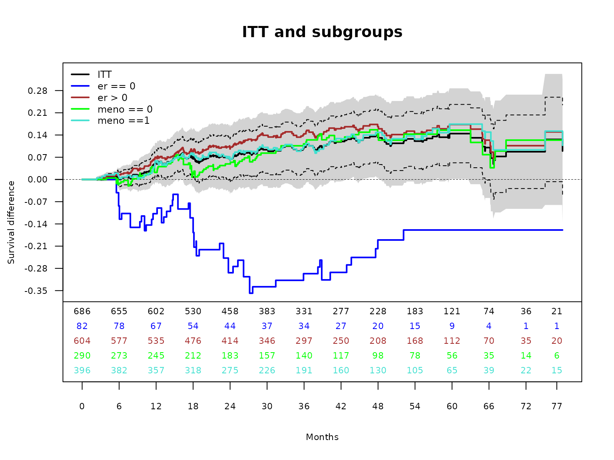
Look at GBSG er>0 subgroup population
—- Simultaneous CI bands —-
par(mfrow=c(1,2))
temp <- plotKM.band_subgroups(
df = subset(df_gbsg, er > 0),
xlabel="Months", ylabel="Survival difference",
yseq_length=5, cex_Yaxis=0.7, risk_cex=0.7,
by.risk=6, risk_delta=0.075, risk.pad=0.03,
tte.name = tte.name, treat.name = treat.name, event.name = event.name, draws.band = 1000, show_resamples = TRUE
)
legend("topleft", c("Difference estimate", "95% pointwise CIs"),
lwd=c(2,1), col=c("black"), lty=c(1,2), bty="n", cex=0.75)
title(main="Estrogen receptor positive (er>0) sub-population")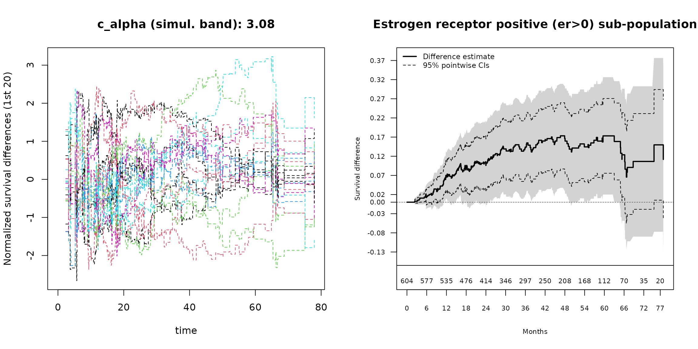
Weighted Cox Analysis of Rotterdam data with time-dependent, and subject-specific [ps weighting] weighting
The FH(0,0) analysis (the Cox model with propensity-score weights) is shown with the weights treated as estimated, with the asymptotic interval, and with the weights treated as known, with the resampling interval. The analyses with time-dependent weights (FH(0,1), FH_exp2, MB(12), zero_one(6)) treat the propensity-score weights as known and show the resampling interval (1000 draws). The table needs the data.table and gt packages.
library(data.table)
library(gt)
# Restricted Rotterdam population, propensity-score weighted:
# dfcount_rotterdam_wtd weights treated as estimated (weight_variance = "estimated")
# dfcount_rotterdam_known weights treated as known (the default)
# cox_rhogamma() takes the option from the df_counting() result it is given.
#
# Note: with subject weights (here propensity-score weights) that are not all equal, the asymptotic
# SE of the log hazard ratio is the score-residual (robust) SE, and the resampling SE (draws > 0) is
# built from the same per-subject score contributions, so the two estimate the same quantity.
# hr_ci_asy is centred at the estimate; hr_ci_star is centred at the de-biased estimate and uses
# the resampling SE.
cox_row <- function(analysis, dfcount, interval = c("asymptotic", "resampling"), ...) {
interval <- match.arg(interval)
get_rg <- cox_rhogamma(dfcount = dfcount, ..., draws = if (interval == "resampling") 1000 else 0, verbose = FALSE)
ci <- if (interval == "resampling") get_rg$hr_ci_star else get_rg$hr_ci_asy
data.table(analysis = analysis, weights = get_rg$weight_variance, interval = interval,
z = get_rg$z.score, hr = get_rg$hr_ci_asy$hr, lower = ci$lower, upper = ci$upper)
}
# compare with coxph()
#cat("Comparison with coxph with weighting, coxph:", dfcount_rotterdam_wtd$cox_results$cox_text, "\n")
res_update <- rbind(
cox_row("FH(0,0)", dfcount_rotterdam_wtd, "asymptotic", scheme = "fh", scheme_params = list(rho = 0, gamma = 0)),
cox_row("FH(0,0)", dfcount_rotterdam_known, "resampling", scheme = "fh", scheme_params = list(rho = 0, gamma = 0)),
cox_row("FH(0,1)", dfcount_rotterdam_known, "resampling", scheme = "fh", scheme_params = list(rho = 0, gamma = 1)),
cox_row("FH_exp2", dfcount_rotterdam_known, "resampling", scheme = "fh_exp2"),
cox_row("MB(12)", dfcount_rotterdam_known, "resampling", scheme = "MB", scheme_params = list(mb_tstar = 12)),
cox_row("zero_one(6)", dfcount_rotterdam_known, "resampling", scheme = "custom_time", scheme_params = list(t.tau = 6, w0.tau = 0, w1.tau = 1))
)
res_update %>% gt() %>% fmt_number(decimals = 3) | analysis | weights | interval | z | hr | lower | upper |
|---|---|---|---|---|---|---|
| FH(0,0) | estimated | asymptotic | 4.869 | 0.665 | 0.564 | 0.784 |
| FH(0,0) | known | resampling | 4.449 | 0.665 | 0.560 | 0.797 |
| FH(0,1) | known | resampling | 2.578 | 0.763 | 0.623 | 0.941 |
| FH_exp2 | known | resampling | 3.996 | 0.690 | 0.579 | 0.829 |
| MB(12) | known | resampling | 4.399 | 0.668 | 0.561 | 0.800 |
| zero_one(6) | known | resampling | 4.117 | 0.675 | 0.562 | 0.816 |
Some checks on results
The checks in this section treat the weights as known
(weight_variance = "known", the default), as
survfit(weights = ) does.
Check weighted K-M SE’s with survfit
With weights that are not all equal, the standard error of a weighted
K-M curve is the robust standard error, which is also what
survival::survfit(weights = ) reports.
check.seKM = TRUE plots the two against each other.
dfcount_rotterdam_known <- get_dfcounting(df=df_rotterdam, tte.name=tte.name, event.name=event.name, treat.name=treat.name, arms=arms, by.risk=24,
weight.name="sw.weights", check.seKM = TRUE, draws = 0)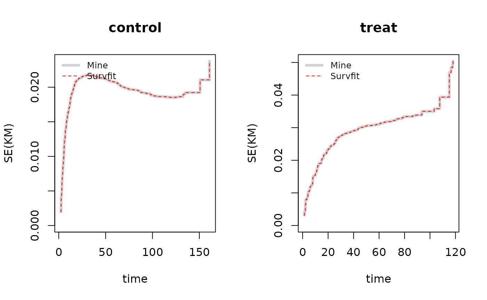
The weighted K-M standard errors agree with those of
survfit(): the largest absolute difference is 5^{-17} in
the control arm and 5^{-17} in the treated arm.
Check SE’s calculated via resampling (draws = 5000)
Note that draws = 5000 does not take much time, but can be reduced to
around 500 for sufficient accuracy. The resampling-based pointwise
variance (draws > 0) is not available with
weight_variance = "estimated", so this check stays on
"known".
dfcount_rotterdam_draws <- get_dfcounting(df=df_rotterdam, tte.name=tte.name, event.name=event.name, treat.name=treat.name, arms=arms, by.risk=24,
weight.name="sw.weights", check.seKM = TRUE, draws = 5000)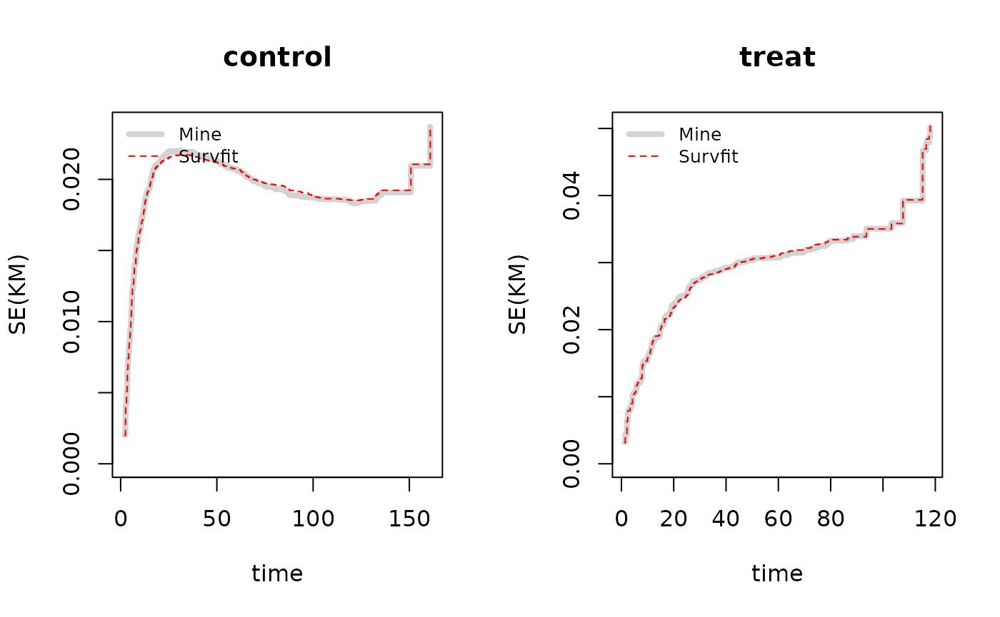
Compare with the adjustedCurves package
The adjustedCurves call uses the same time and event
variables as the weightedsurv analysis (tte and
event, defined in the data preparation above) and the same
propensity model. This comparison needs the adjustedCurves and pammtools
packages.
# Compare with adjustedCurves
library(adjustedCurves)
library(pammtools)##
## Attaching package: 'pammtools'## The following object is masked from 'package:stats':
##
## filter
df_rotterdam$hormon2 <- with(df_rotterdam, factor(hormon, labels=c("No","Yes")))
ps_model <- glm(hormon2 ~ age+size+grade3+nodes+pgr+er, data = df_rotterdam, family="binomial")
iptw <- adjustedsurv(data=df_rotterdam, variable="hormon2", ev_time="tte", event = "event", method = "iptw_km", treatment_model = ps_model, conf_int = TRUE)Compare KM plots with adjustedCurves package
plot_weighted_km(dfcount=dfcount_rotterdam_known, conf.int = TRUE)
title(main="Rotterdam weighted K-M curves")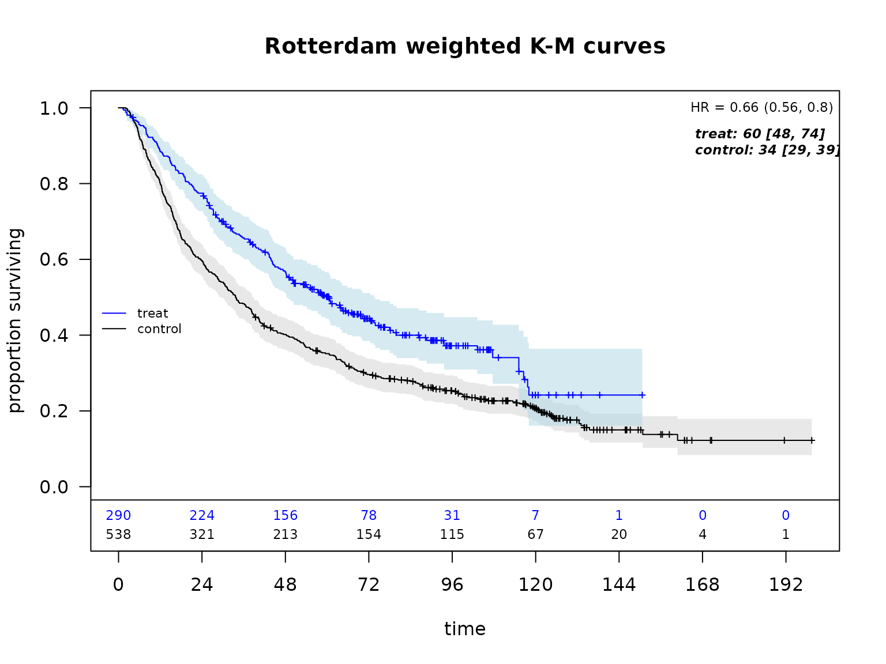
plot(iptw, conf_int = TRUE, legend.title = "Hormonal therapy")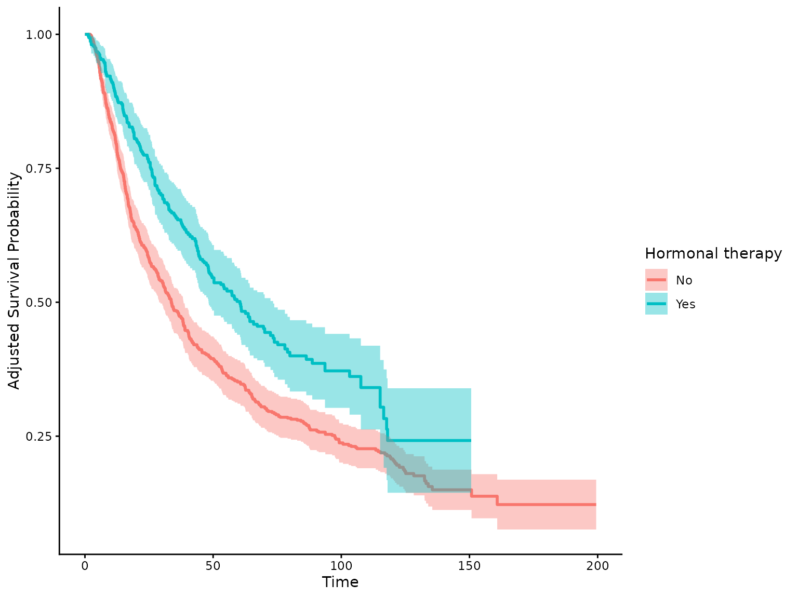
Compare SE’s with adjustedCurves package
# Check SEs
par(mfrow=c(1,2))
df_mine <- dfcount_rotterdam_known
df_check <- subset(iptw$adj, group == "No")
yymax <- max(c(sqrt(df_mine$sig2_surv0[df_mine$idv0.check]), df_check$se))
toget <- df_mine$idv0.check
tt <- df_mine$at_points[toget]
yy <- sqrt(df_mine$sig2_surv0)[toget]
plot(tt,yy, type="s", lty=1, col="lightgrey", lwd=4, ylim=c(0,yymax), xlab="time", ylab="SEs")
with(df_check, lines(time, se, type="s", lty=2, lwd=1, col="red"))
title(main="Control SEs")
df_check <- subset(iptw$adj, group == "Yes")
yymax <- max(c(sqrt(df_mine$sig2_surv1[df_mine$idv1.check]), df_check$se))
toget <- df_mine$idv1.check
tt <- df_mine$at_points[toget]
yy <- sqrt(df_mine$sig2_surv1)[toget]
plot(tt,yy, type="s", lty=1, col="lightgrey", lwd=4, ylim=c(0,yymax), xlab="time", ylab="SEs")
with(df_check, lines(time, se, type="s", lty=2, lwd=1, col="red"))
title(main = "Treat SEs")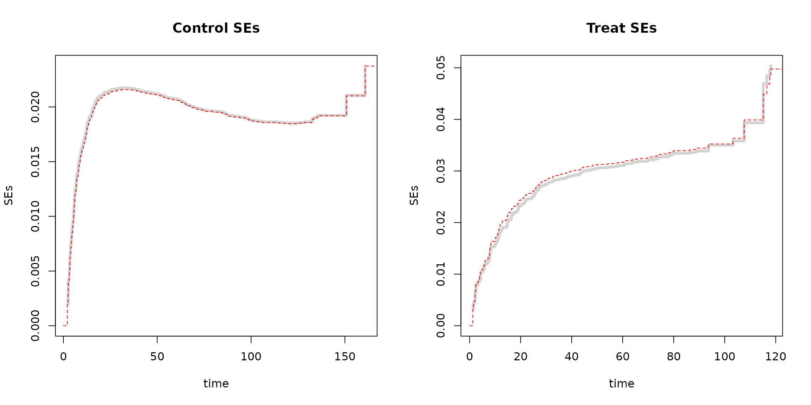
The weighted K-M curves of the two packages agree (largest absolute
difference 9^{-16}). The standard errors still differ: the ratio of the
weightedsurv standard error (grey) to the iptw_km standard
error of adjustedCurves (red) ranges from 1.00 to 1.06 in
the control arm and from 0.90 to 1.05 in the treated arm. The weighted
K-M standard errors of survfit() agree with those of
weightedsurv (see the check above).
Check log-rank statistics
# dfcount_gbsg (un-weighted) contains logrank (chisq) stats from specified scheme (default is standard logrank rho=0 and gamma=0) from 3 sources:
# (1) lr^2 / sig2_lr: the weighted log-rank statistic and its variance (wlr_cumulative)
# (2) logrank_results$chisq: without subject weights (as here), survdiff, which only provides rho options
# so gamma != 0 is not available; with subject weights that are not all equal it is instead the
# robust score test of the weighted Cox model (coxph, robust = TRUE), see logrank_results$method
# (3) z.score^2: the standardized weighted log-rank statistic (Cox score-test perspective)
check_results(dfcount_gbsg)##
## Test Statistic Comparison:
## (These should be approximately equal)
##
## zlr_sq logrank_chisq zCox_sq
## 8.564781 8.564781 8.564781
##
## Relative difference: 8.711e-13%
# Check wlr_dhat_estimates which calculates from any scheme based on counting dataset
# In addition, calculates dhat's at tzero as well as correlation with log-rank
temp <- wlr_dhat_estimates(dfcounting = dfcount_gbsg, scheme_params = list(rho = 0, gamma = 0), scheme = "fh", tzero = 12)
temp$z.score^2## [1] 8.564781- Stratified by grade, just for illustration
res <- df_counting(df=df_gbsg, tte.name=tte.name, event.name=event.name, treat.name=treat.name, arms=arms, strata.name="grade")stratified
with(res,lr_stratified^2/sig2_lr_stratified)## [1] 7.395797
# logrank_results: survdiff, stratified (un-weighted data; with subject weights that are not all equal
# this element is the stratified robust score test of the weighted Cox model)
res$logrank_results$chisq## [1] 7.395797
# Cox score stratified
with(res,z.score_stratified^2)## [1] 7.395797non-stratified (should be same as above results without stratification)
with(res,lr^2/sig2_lr)## [1] 8.564781
with(res,z.score^2)## [1] 8.564781
# Restore when done
par(oldpar)